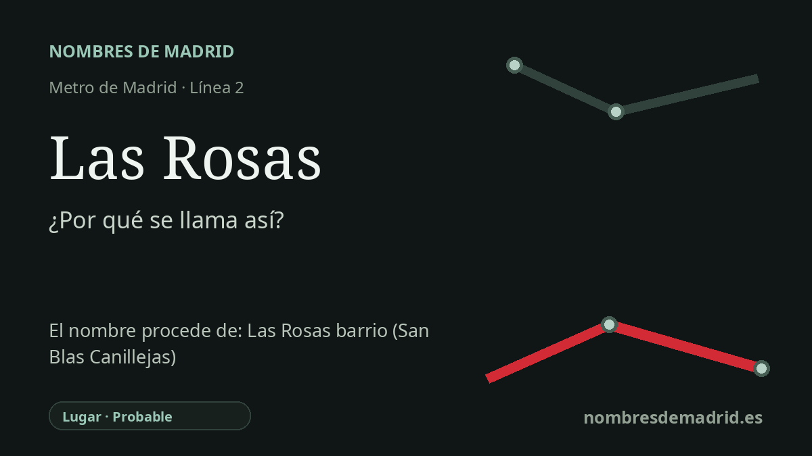

Publicado el · Investigación de Nombres de Madrid · Cómo verificamos cada origen · 7 fuentes consultadas
Respuesta rápida
La estación de Las Rosas toma su nombre del ámbito urbano de Las Rosas, hoy vinculado al barrio administrativo de Rosas en San Blas-Canillejas. El origen último del topónimo no está claro: las fuentes urbanísticas oficiales lo documentan como sector y urbanización de Las Rosas, no como un jardín de rosales comprobado.
La historia del nombre
La estación de Las Rosas toma su nombre del lugar al que sirve: el ámbito urbano de Las Rosas, en el distrito de San Blas-Canillejas. El barrio administrativo actual se llama oficialmente Rosas, mientras que en el uso cotidiano y en el transporte se mantiene con frecuencia el artículo: Las Rosas. Por eso la cabecera de Metro emplea la forma local más reconocible, no la denominación administrativa abreviada.
La evidencia más sólida apunta a un nombre urbanístico moderno. La documentación municipal de Madrid indica que el barrio de Rosas toma su nombre por contener la urbanización de Las Rosas, un área de urbanización reciente que continúa el sector más moderno de Arcos. Los documentos del Plan General de 1985 y los informes posteriores de desarrollo urbanístico también registran sectores denominados Las Rosas en San Blas.
La historia más amplia es la de la expansión oriental de Madrid. La zona formó parte del Ensanche Este de San Blas, planteado para completar y transformar el borde oriental de la ciudad entre el San Blas ya consolidado, Vicálvaro, el entorno del cementerio y la M-40. La literatura urbanística contemporánea sobre el sector Las Rosas lo describía como una gran oportunidad para crear nuevas viviendas, calles, parques y dotaciones en terrenos periféricos.
El nombre también arrastra un contraste importante de historia urbana. Fuentes municipales y de prensa relacionan el desarrollo de Las Rosas con la desaparición del asentamiento chabolista de Los Focos o Los Módulos, situado en el entorno de la avenida de Guadalajara. En los años noventa, el nuevo barrio residencial, el centro comercial y más tarde la llegada del Metro consolidaron una imagen muy distinta de esta parte de San Blas.
El significado literal de Las Rosas es evidente, pero no debe confundirse con una etimología demostrada. No consta una fuente autorizada que pruebe que el nombre proceda de una finca, vivero o jardín de rosales concreto. La interpretación mejor respaldada es, por tanto, que la estación se llama así por la urbanización de Las Rosas y el barrio de Rosas; queda abierta la razón última por la que aquel sector urbanístico recibió ese nombre.